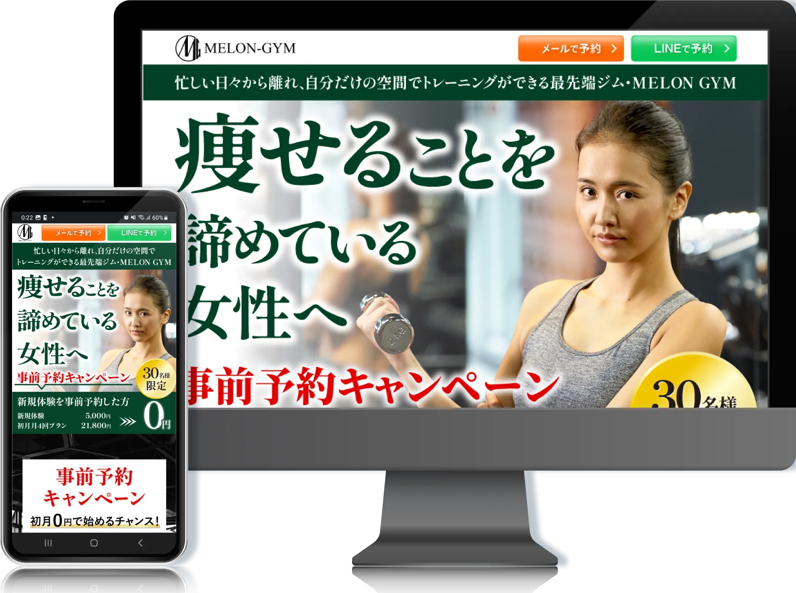
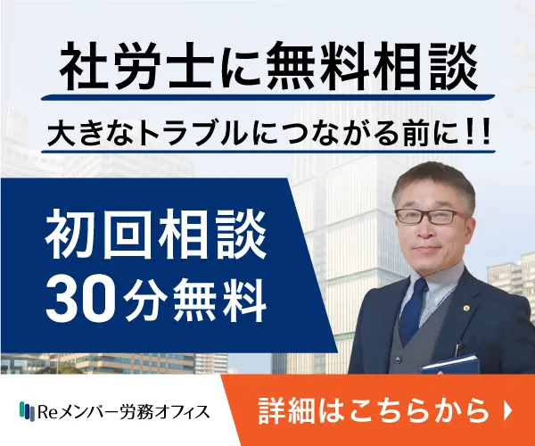
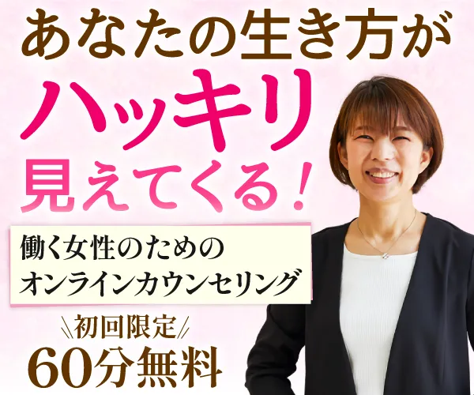
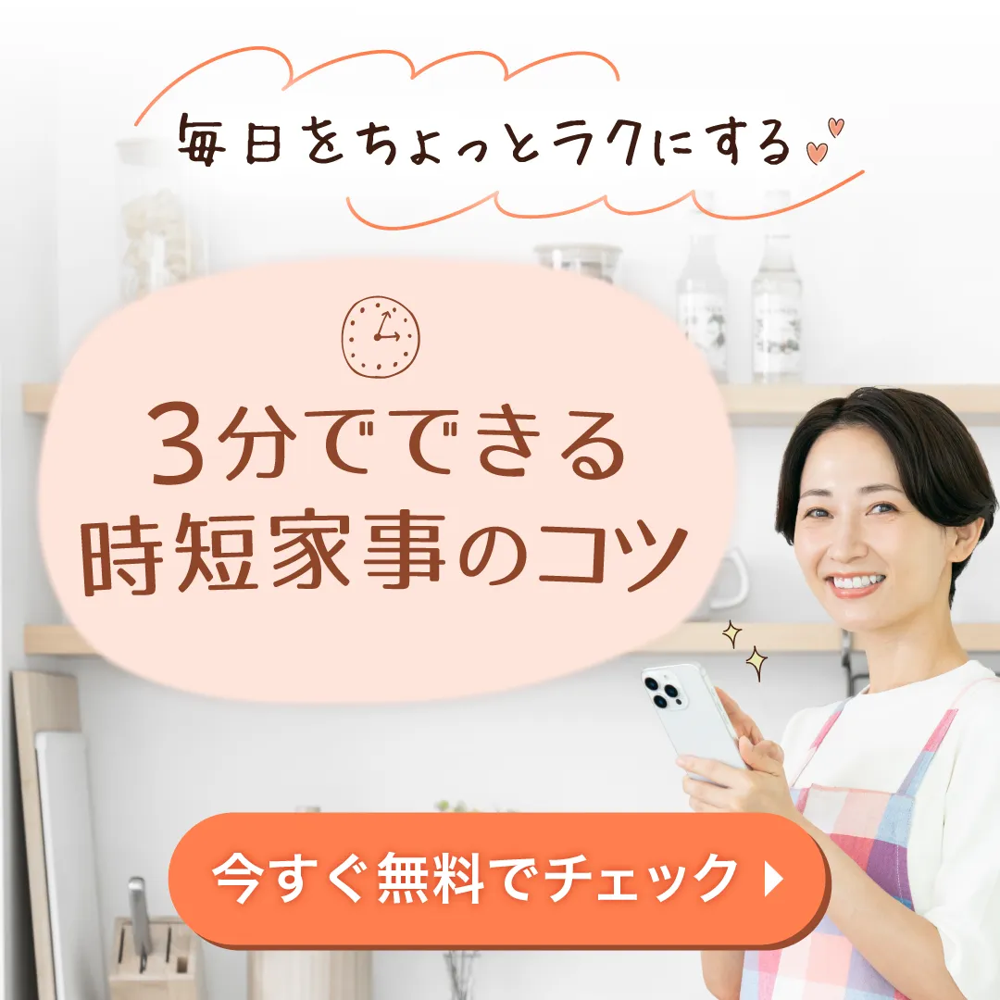
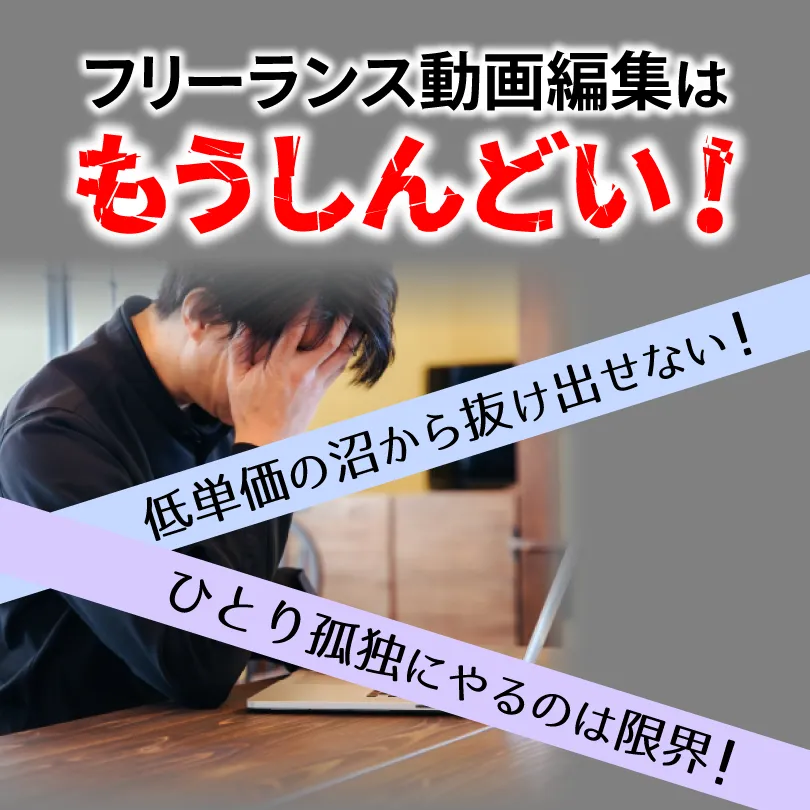
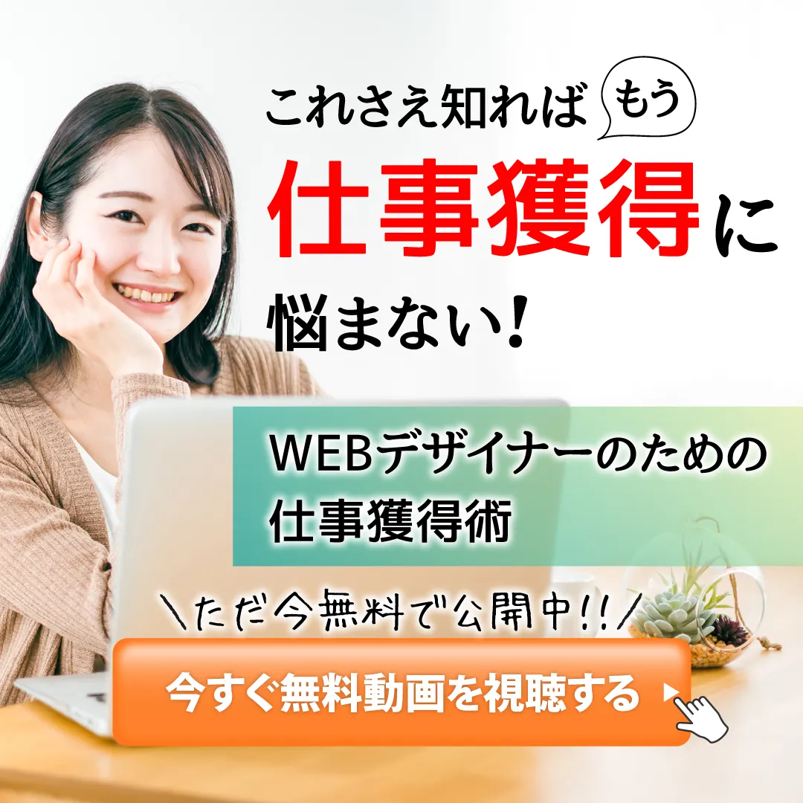
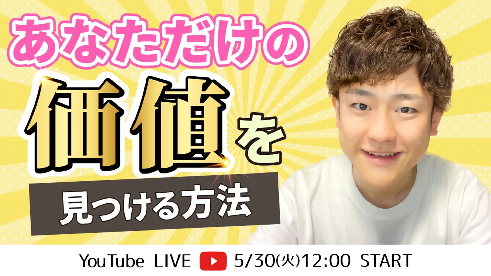

WORKS
Webサイト制作

社労士事務所Webサイト制作
目的：問い合わせ増加・顧問契約獲得
ターゲット：従業員10〜50名の中小企業
課題：労務に関する専門性が高く、サービス内容が分かりづらいため、相談への心理的ハードルが高くなりやすい点
工夫：初めて利用する企業でも安心して閲覧できるよう、情報の区切りや余白を意識し、全体の構成を整理。
また、各サービス内容が把握しやすいよう、セクションごとに情報を分けて配置し、視覚的に理解しやすいレイアウトを意識しました。
さらに、検討段階のユーザーがスムーズに行動できるよう、各セクションに問い合わせ導線を配置し、自然に相談へつながる流れを意識しました。
担当範囲：ワイヤーフレーム / デザイン / コーディング
制作期間：4～5週間
URL：https://re-member-roum.jp/
LP制作

トレーニングジムLP制作
目的：無料体験の申込み
ターゲット：パーソナルジム初心者の女性
課題：料金が比較的高額であるため、「本当に自分に合うのか」「続けられるのか」といった不安から、申し込みに至りにくい点
工夫：価格に対する不安を軽減するため、信頼感と安心感を重視したデザインにしました。
具体的には、深緑をベースに、渋い赤とゴールドをアクセントとして使用し、落ち着きの中に高級感を感じられる配色設計としました
また、初心者でも安心して利用できることが伝わるよう、「無料体験」への導線を明確にし、申し込みへの心理的ハードルを下げる構成にしました。
担当範囲：ワイヤーフレーム / デザイン / コーディング
制作期間：約3週間

LPリニューアル（既存ページ改善）
目的：情報の可読性向上・離脱防止
ターゲット：家事や育児に追われる中で、子どもに余裕を持って接することができず自己嫌悪を感じている一方、自分の時間や収入も確保したいと考えている女性
課題：テキスト中心で情報量が多く、内容の魅力や価値が十分に伝わりにくいため、ユーザーの共感や理解につながりにくい構成になっていた点
工夫：情報を役割ごとに整理し、見出し・余白・配色によって視線の流れを設計しました。
スマートフォンでの閲覧を前提に、文字サイズ・余白・改行位置を調整し、可読性を向上しました。
また、特典として訴求されていたPDFコンテンツについて、内容が伝わりやすくなるよう本のモックを作成し、視覚的に「受け取れる価値」がイメージしやすいよう改善しました
担当範囲：ワイヤーフレーム / デザイン（SP）
制作期間：2～3週間
バナー

社労士事務所広告バナー制作
課題：士業への相談は心理的ハードルが高く感じられてしまう点
工夫：士業としての信頼感を損なわないよう、落ち着いた配色と可読性の高い文字設計を行いました。
また、クリックにつながるよう、視線の流れを意識してキャッチコピーを配置しました。
担当範囲：コピー / デザイン

女性カウンセラーバナー制作
課題：カウンセリングサービスは心理的ハードルが高く感じられてしまう点
工夫：安心感と親しみやすさを重視し、満面の笑みの写真と、やわらかい配色やフォントを使用しました。
ターゲットに寄り添ったトーンでまとめることで、「この人に相談してみたい」と感じてもらえるデザインを意識しました。
担当範囲：デザイン

時短家事広告バナー制作
課題：短時間で内容が伝わらないとスルーされやすく、クリックにつなげるハードルが高い点
工夫：ターゲットに共感してもらうことを重視し、「今より少しだけラクに」「ちょっとした時間でできる」といった希望を想起させるコピーを設計しました。
視認性を高めるため、文字の強弱や配置を工夫し、一目でメリットが伝わる構成にしました。
担当範囲：コピー / デザイン

動画編集者広告バナー制作
課題：競合が多い分野のため、「自分に関係のある情報だ」と認識してもらわないとクリックにつながりにくい点
工夫：同じ悩みを持つターゲットに共感してもらうことを重視し、「案件が取れない」「収入が伸びない」といった課題を想起させるコピーを設計しました。
視認性を高めるために文字の強弱や配置を調整し、インパクトのある構成にしました。
担当範囲：コピー / デザイン

WEBデザイナー広告バナー制作
課題：案件獲得に悩む層に向けた広告のため、「自分にもできるのか」という不安が強く、関心を持ってもクリックにつながりにくい点
工夫：「これを見れば案件獲得につながる・・！」と希望が持てるコピーを設計しました。
やわらかい配色と親しみやすいトーンでまとめることで、心理的なハードルを下げ、クリックしやすい雰囲気を演出しました。
担当範囲：コピー / デザイン

YouTubeサムネイル制作
課題：一覧表示の中で他の動画と並ぶため、短時間で視認性を確保し、興味を引かないとクリックにつながらない点
工夫：一目で内容が伝わるよう、タイトルの要点を絞り、文字の大きさや配置にメリハリをつけて視認性を向上しました。
また、ポジティブな印象を与える配色を使用し、視覚的に目に留まりやすいデザインを意識しました。
担当範囲：デザイン